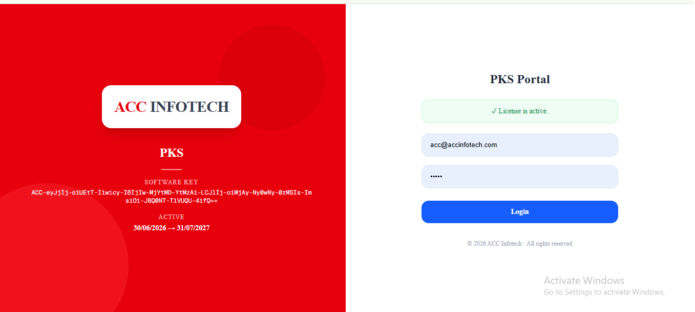
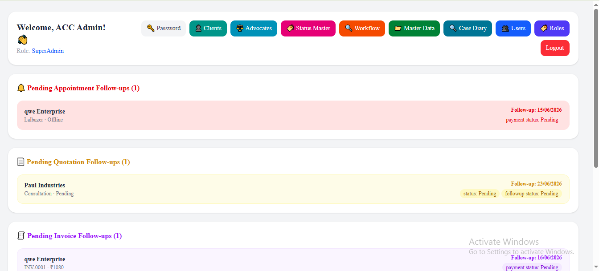
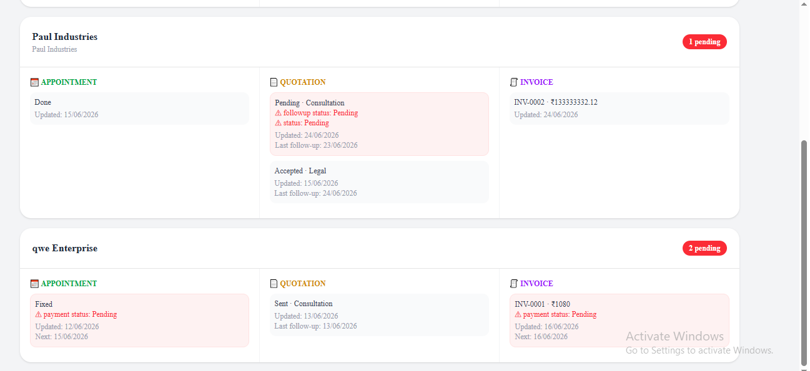
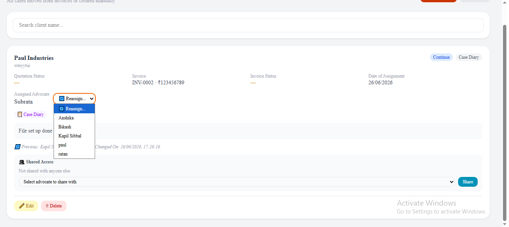
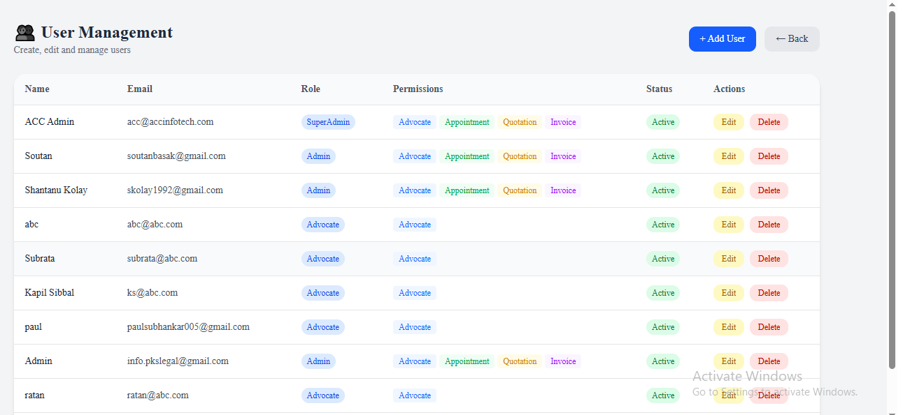
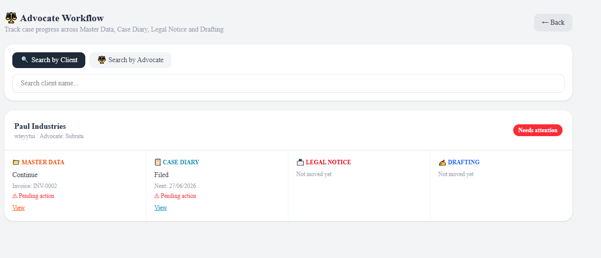

Advocate CRM
A full-stack client and case management application built for a law firm, covering appointments, billing, hearings, and role-based authentication. This is my flagship full-stack project — the point where I moved from desktop/Apps Script development into a proper modern web stack.
Features
- Client and case record management
- Appointment scheduling and hearing tracking
- Billing and invoicing for client matters
- Role-based authentication for different firm staff
- PostgreSQL data layer via Supabase, managed with Prisma ORM
Screenshots






Technologies Used
Next.js, Supabase (PostgreSQL), Prisma ORM, Vercel deployment. Rebuilt from an earlier version originally built on Google Sheets and Apps Script (AdvocateDB, appointments, quotations, invoices) with URL-parameter-based session management and multi-page routing.
Challenges & Learnings
The main challenge was mapping concepts from the original Apps Script prototype — session management via URL parameters, multi-page routing, a flat Sheets-based data model — onto a proper full-stack architecture. Learned how Next.js routing, Supabase auth, and a Prisma-modeled PostgreSQL schema replace those patterns, and how to structure role-based access control in a web app rather than a spreadsheet.